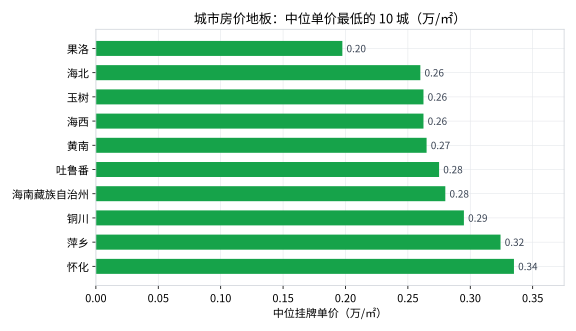

城市对比：哪里最贵、哪里最便宜
上一课把全国当一个整体看，这一课把它拆开：209 个城市各自的中位房价是多少、怎么排名。用到的 groupby 是数据分析使用频率第一名的招式——学会它，你就入门了一半。
本课目标
- 掌握 groupby 分组聚合：按城市算中位价、样本量
- 学会排序取 Top（
sort_values+head） - 认识"小样本陷阱"：为什么排名表里必须带上样本量 n
- 画横向条形图（排行榜的正确画法）
一步步做
核心招式：groupby 分组聚合
先想清楚我们要什么：每个城市 × 中位价格 + 样本量。用 Excel 说，就是插入一张"数据透视表"：行放 city，值放 price 的中位数。pandas 里写出来是这样（新建 step4_city.py）：
import pandas as pd df = pd.read_csv("toy_realestate_sample.csv", encoding="utf-8-sig") df = df.drop_duplicates() df = df[df["synthetic"] == 0] df = df[df["price"].notna() & (df["price"] > 0)] # 按 city 分组，每组算三个指标，然后按中位价从高到低排序 city_stat = ( df.groupby("city") .agg( n=("community_name", "count"), # 每城有几个小区样本 median_price=("price", "median"), # 中位价（万/㎡） mean_price=("price", "mean"), # 平均价，用来对比 ) .sort_values("median_price", ascending=False) .reset_index() ) print(city_stat.head(15).to_string(index=False))
groupby 到底做了什么？
想象把 15,035 张卡片按城市分成 209 摞，然后对每一摞分别数张数（n）、算中位数、算平均数，最后把 209 个结果拼回一张表。.agg() 括号里的写法 新列名=("原列名", "函数") 就是在说"这一摞要算哪些指标"。
注意每个城市的平均价都高于中位价——第 3 课的"长尾拉高平均数"在每个城市内部都成立。
🔍 又到了用常识审视结果的时刻
榜单前 9 名（上海→天津）符合直觉，但第 10 名宿州（安徽）中位 3.67 万，比成都还贵？这明显反常——真实世界的宿州远没有这个价。原因是这份数据对宿州的抽样严重偏向了贵的小区（回忆 README：每城只是抽样，不是全量）。
教训：groupby 能一秒出结果，但结果靠不靠谱要你自己判断。遇到反常识的数字，先怀疑数据，再怀疑代码，最后才考虑"新发现"。
两张排行榜
条形图是排行榜的最佳形态。先画最贵的 15 城：
import matplotlib.pyplot as plt plt.rcParams["font.sans-serif"] = ["Microsoft YaHei", "PingFang SC", "SimHei"] plt.rcParams["axes.unicode_minus"] = False top15 = city_stat.head(15) fig, ax = plt.subplots(figsize=(8, 4.6)) # 注意：城市名从下往上排（[::-1]），否则第一名在最下面 ax.barh(top15["city"][::-1], top15["median_price"][::-1], color="#2563eb", height=0.62) ax.set_xlabel("中位挂牌单价（万/㎡）") ax.set_title("城市房价天花板：中位单价最贵的 15 城") plt.tight_layout() plt.savefig("city_top15.png", dpi=150) plt.show()

把 head(15) 换成 tail(10)（再倒序）就是最便宜的 10 城：

⚠️ 小样本陷阱：排行榜里藏着地雷
回看最便宜榜单，把 n 列带上再看一遍：
| 城市 | 中位价（万） | 样本量 n |
|---|---|---|
| 果洛 | 0.20 | 6 |
| 玉树 | 0.26 | 14 |
| 海西 | 0.26 | 14 |
| 黄南 | 0.27 | 17 |
| 吐鲁番 | 0.28 | 80 |
用 6 个小区给一座城市下"全国最便宜"的结论，说服力很弱——运气不好抽到 6 个便宜盘就垫底了。这是数据分析的经典陷阱：数字看起来很确定，背后却是小样本。处理办法：给排行榜加一条样本量门槛，比如 city_stat[city_stat["n"] >= 30]，把 n 太小的城市先筛掉，或者至少在图表下方注明 n。
换个玩法：城市内部的贫富差距
每个城市内部，最贵小区是便宜小区的几倍？这个"分化倍数"能看出哪些城市豪宅和刚需房差距悬殊：
city_stat["spread_ratio"] = city_stat["max_price" / city_stat["min_price"] # 注意：max/min 也要在前面 agg 里加上，像这样： # max_price=("price", "max"), min_price=("price", "min") polarized = city_stat.sort_values("spread_ratio", ascending=False).head(3) print(polarized[["city", "min_price", "max_price", "spread_ratio"]].to_string(index=False))
同一个城市里，最贵的小区能达到最便宜的 10～18 倍。郑州 1.13 万的刚需盘和 10.86 万的北龙湖豪宅共享同一个城市名——"城市的平均房价"这七个字，有时候掩盖了两个世界。
课后练习
- 找到你所在城市的中位房价和全国排名。（提示：先 reset_index，然后用布尔筛选
city_stat[city_stat["city"] == "你的城市"]；排名可以用city_stat["city"].tolist().index("你的城市") + 1） - 给最贵 15 城的条形图上，在每个条末端标上数值（提示：
ax.text()，可以回头看官网源码里的写法）。 - 用 n≥30 过滤后重画"最便宜 10 城"，看看榜单有什么变化。
点开看参考答案
# 练习1 示例（以武汉为例）：
cities = city_stat["city"].tolist()
my = city_stat[city_stat["city"] == "武汉"]
print(my[["city", "n", "median_price"]])
print("全国排名:", cities.index("武汉") + 1) # 武汉中位 2.07 万，第 21 名左右
# 练习2 关键行（数值 = 条长 + 一点偏移）：
for i, v in enumerate(top15["median_price"][::-1]):
ax.text(v + 0.15, i, f"{v:.2f}", va="center", fontsize=10)
# 练习3：过滤断崖式小样本后，吐鲁番（n=80）大概率登上"最便宜"榜首，
# 青海州县们因为 n 太小被过滤——榜单更可信了，这就是"样本量门槛"的意义。